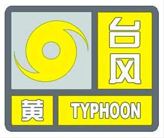

【台风红色预警信号】
含义：
6小时内可能或者已经受热带气旋影响，沿海或者陆地平均风力达12级以上，或者阵风达14级以上并可能持续。
防御指南：
1、政府及相关部门按照职责做好防台风应急和抢险工作；
2、停止集会、停课、停业（除特殊行业外）；
3、回港避风的船舶要视情况采取积极措施，妥善安排人员留守或者转移到安全地带；
4、加固或者拆除易被风吹动的搭建物, 人员应当待在防风安全的地方，当台风中心经过时风力会减小或者静止一段时间，切记强风将会突然吹袭，应当继续留在安全处避风，危房人员及时转移；
5、相关地区应当注意防范强降水可能引发的山洪、地质灾害。
【台风橙色预警信号】
含义：
12小时内可能或者已经受热带气旋影响,沿海或者陆地平均风力达10级以上，或者阵风12级以上并可能持续。
防御指南：
1、政府及相关部门按照职责做好防台风抢险应急工作；
2、停止室内外大型集会、停课、停业（除特殊行业外）；
3、相关水域水上作业和过往船舶应当回港避风，加固港口设施，防止船舶走锚、搁浅和碰撞；
4、加固或者拆除易被风吹动的搭建物,人员应当尽可能待在防风安全的地方，当台风中心经过时风力会减小或者静止一段时间，切记强风将会突然吹袭，应当继续留在安全处避风，危房人员及时转移；
5、相关地区应当注意防范强降水可能引发的山洪、地质灾害。

【台风黄色预警信号】
含义：
24小时内可能或者已经受热带气旋影响,沿海或者陆地平均风力达8级以上，或者阵风10级以上并可能持续。
防御指南：
1、政府及相关部门按照职责做好防台风应急准备工作；
2、停止室内外大型集会和高空等户外危险作业；
3、相关水域水上作业和过往船舶采取积极的应对措施，加固港口设施，防止船舶走锚、搁浅和碰撞；
4、加固或者拆除易被风吹动的搭建物,人员切勿随意外出，确保老人小孩留在家中最安全的地方，危房人员及时转移。
【台风蓝色预警信号】
含义：24小时内可能或者已经受热带气旋影响,沿海或者陆地平均风力达6级以上，或者阵风8级以上并可能持续。
防御指南：
1、政府及相关部门按照职责做好防台风准备工作；
2、停止露天集体活动和高空等户外危险作业；
3、相关水域水上作业和过往船舶采取积极的应对措施，如回港避风或者绕道航行等；
4、加固门窗、围板、棚架、广告牌等易被风吹动的搭建物,切断危险的室外电源。